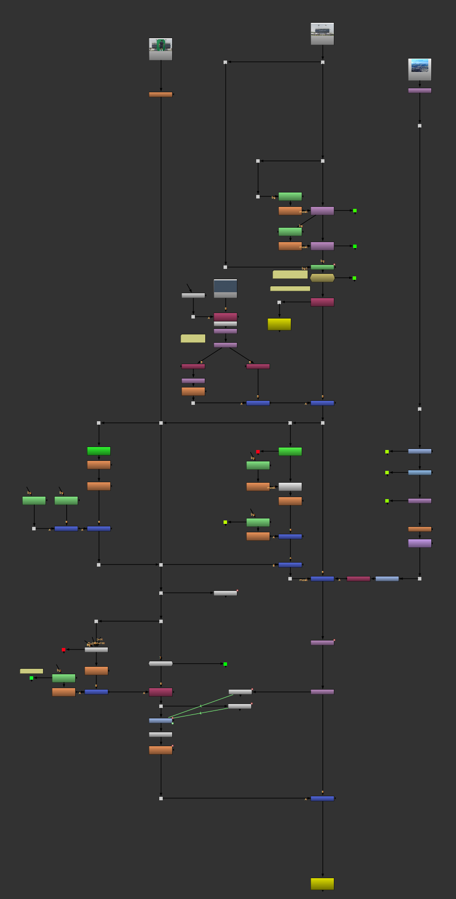

Stadium Chromakey Exercise
This project simply required the combination of multiple plates (Greenscreen, BG, Far BG) into one final, cohesive image. I keyed out the player, as well as a luma keyer to cut out the original sky. Roto shapes were used to fill in necessary gaps. The largest part of this project was the rotopaint for the sign replacement. I had a desire to make a completely clean plate with both stadium signs removed, so I studied the simple patterns, which helped train my eye for small details such as chromatic aberration, how pixels blend together, and very subtle lighting discrepancies.
Key Work
- Keyed the greenscreen player, cleaned the matte, and controlled spill on the foreground plate.
- Pulled a separate luma key for the sky replacement and balanced it back into the stadium plate.
- Painted out the original stadium signage and rebuilt it with custom text / graphics.
- Used supporting roto and edge cleanup to keep the player, signage, stadium, and sky sitting together.
Before / After
Node Tree
▼
